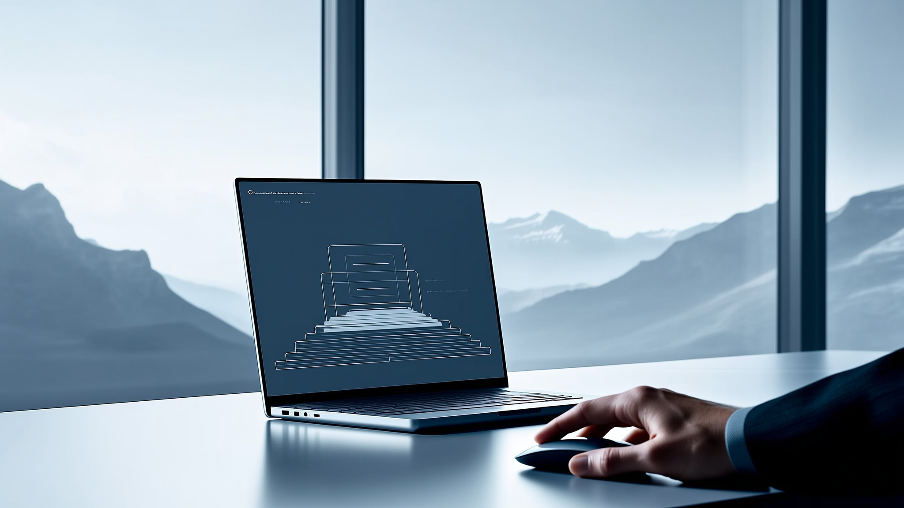

Kundenakquise automatisieren Schweiz: So gelingt der Umstieg auf Autopilot

07.08.2026
Kennst du das Problem? Dein CRM ist voll mit Kontakten, die nie zu Kunden werden. Dein Vertriebsteam verbringt Stunden mit LinkedIn-Nachrichten und Datenpflege, statt Gespräche mit echten Interessenten zu führen. Und während du noch überlegst, wie du reagierst, hat dein Wettbewerber den Interessenten längst am Telefon. Genau hier setzt die Automatisierung der Kundenakquise an – und für Schweizer KMU ist sie längst kein Zukunftsthema mehr, sondern eine Notwendigkeit.
Warum klassische Kundenakquise in der Schweiz an ihre Grenzen stösst
Manuelle Akquise funktioniert – aber sie skaliert nicht. Ein Vertriebsmitarbeiter kann pro Tag nur eine begrenzte Anzahl an Nachrichten personalisieren, Follow-ups schreiben und Termine koordinieren. Gleichzeitig zeigen Studien: 78 Prozent der Käufer entscheiden sich für den Anbieter, der als Erster antwortet. Wenn deine Reaktionszeit bei 40 Stunden liegt, hast du das Rennen oft schon verloren, bevor es begonnen hat.
Hinzu kommt: Viele Schweizer KMU haben ein CRM, das eher einem Friedhof gleicht als einer Vertriebsmaschine. Kontakte werden erfasst, aber nicht bearbeitet. Potenzial verschwindet in Excel-Listen und E-Mail-Postfächern. Das ist kein Personalproblem – es ist ein Prozessproblem.
Was bedeutet Kundenakquise automatisieren wirklich?
Automatisierte Kundenakquise heisst nicht, wahllos Massen-E-Mails zu versenden. Es bedeutet, dass ein System kontinuierlich und strukturiert arbeitet: Es identifiziert passende Zielunternehmen, spricht sie über die richtigen Kanäle an, reagiert sofort auf Antworten und qualifiziert Interessenten, bevor dein Vertriebsteam überhaupt involviert wird.
Ein KI-gestützter Vertriebsagent übernimmt dabei genau die Aufgaben, die heute Zeit fressen: LinkedIn-Outreach, personalisierte Erstkontakte, Follow-up-Sequenzen und die laufende Pflege der Kontaktdaten im CRM. Das Ergebnis: Dein Vertrieb bekommt qualifizierte Interessenten geliefert, statt sie mühsam selbst zu suchen.
Die drei grössten Hürden bei der Automatisierung – und wie man sie umgeht
Technisches Setup: Viele KMU scheuen die Automatisierung, weil sie IT-Ressourcen fehlen. Eine Done-for-you-Lösung ohne Programmierkenntnisse löst dieses Problem, indem die komplette Einrichtung extern übernommen wird.
Fehlende Vertriebserfahrung im System: Ein Algorithmus ohne Vertriebs-Know-how produziert generische Nachrichten, die niemand liest. Entscheidend ist, dass die eingesetzte Logik auf echter Vertriebserfahrung basiert – im besten Fall auf Jahren praktischer Schweizer Markterfahrung, nicht auf theoretischen Templates aus dem Ausland.
Kontrollverlust: Wer schon einmal 5000 CHF und mehr pro Monat an eine Agentur überwiesen hat, ohne zu wissen, was tatsächlich passiert, kennt das Gefühl. Eine gute Automatisierungslösung gibt dir volle Transparenz über Kampagnen, Antwortraten und Pipeline – jederzeit einsehbar, ohne Umwege über einen Account Manager.
So läuft die Automatisierung in der Praxis ab
Der Ablauf folgt meist einem klaren Muster: Zunächst wird die Zielgruppe definiert – Branche, Unternehmensgrösse, Rolle der Ansprechpartner. Anschliessend übernimmt das System die Kontaktaufnahme über E-Mail und LinkedIn, personalisiert auf Basis von Firmendaten und Trigger-Ereignissen wie Stellenausschreibungen oder Finanzierungsrunden.
Antwortet ein Interessent, reagiert das System in Minuten statt Stunden – rund um die Uhr, auch ausserhalb der Bürozeiten. Qualifizierte Interessenten werden automatisch an dein Vertriebsteam weitergeleitet, inklusive Kontext zur bisherigen Konversation. Dein Team führt nur noch die Gespräche, die wirklich Potenzial haben.
In der Schweiz zeigt sich, dass ein solches System innerhalb von drei bis vier Wochen produktiv arbeiten kann – vorausgesetzt, die Umsetzung erfolgt strukturiert und ohne unnötige technische Hürden.
Datenschutz und Schweizer Anforderungen nicht vergessen
Wer Kundenakquise automatisiert, muss die Datenschutzgrundverordnung und das revidierte Schweizer Datenschutzgesetz beachten. Kontaktdaten dürfen nicht willkürlich gesammelt und verwendet werden. Eine seriöse Lösung berücksichtigt diese Anforderungen von Anfang an – von der Datenerhebung bis zur Speicherung. Das schützt nicht nur dein Unternehmen rechtlich, sondern auch deine Reputation bei potenziellen Kunden.
Fazit: Vertrieb auf Autopilot, ohne Kontrolle zu verlieren
Kundenakquise automatisieren bedeutet nicht, den Vertrieb zu entmenschlichen. Es bedeutet, dein Team von repetitiven Aufgaben zu befreien und ihm die Zeit zu geben, sich auf das zu konzentrieren, was zählt: echte Gespräche mit echten Interessenten. Mit einer Lösung, die auf Schweizer Vertriebserfahrung basiert, DSGVO-konform arbeitet und innerhalb wenigen Wochen startklar ist, wird aus deinem CRM-Friedhof wieder eine funktionierende Vertriebsmaschine.
← Zurueck zum Blog